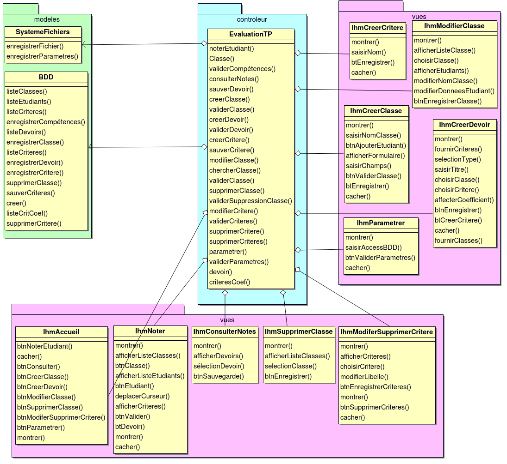

1.1 Class View bdd
bdd
Class Classe |
Class Etudiant |
Class Devoir |
Class Critere |
Class CritereDevoir |
Class EtudiantDevoir |
Class Date |
1.2 Use Case View evaluation

evaluation
Class Enseignant |
Class Installateur |
1.2.1 Use Case Noter un étudiant
Properties:
- Description:Le cas d'utilisation commence quand
1. l'enseignant sélectionne une classe
2. sélectionne un étudiant
3. déplace les curseurs de compétences
4. valide les compétences
5. enregistre les compétences de la classe - Exceptions:Ressources innaccessibles: Proposition de sauvegarde sur un cloud.
- Pre-Conditions:Les classes sont constituées
Les compétences définies - Summary:Saisir une note pour un étudiant
- Context:
- Post-Conditions:Les notes de la classe sont sauvegardées
1.2.2 Use Case Consulter les notes
Properties:
- Description:Le cas d'utilisation commence quand :
1. l'enseignant sélectionne un devoir
2a. il exporte les notes dans un fichier texte utilisable par un tableur - Exceptions:Pb d'accès à la base de données : Affichage d'un msg
Pb d'écriture lors de l'export : Affichage d'un msg - Pre-Conditions:Les notes sont sauvegardées
- Summary:Consultation des notes
- Context:
- Post-Conditions:
1.2.3 Use Case Créer une classe
Properties:
- Description:Le cas d'utilisation commence quand :
1. l'enseignant clique sur l'icône ajouter une classe
2. il saisie le nom de la classe
3. il clique sur l'icone ajouter un étudiant
4. il renseigne les champs nom et prénom
5. il recommence les étapes jusqu'à la fin de la liste
6. il enregistre dans la BDD - Exceptions:Pas d'accès à la BDD : Affichage d'un message d'erreur.
La classe existe: 2b. Affichage de la classe. - Pre-Conditions:La connexion à la base de données existe.
- Summary:Création de classe
- Context:
- Post-Conditions:La liste de la classe est enregistrée.
1.2.4 Use Case Modifier une classe
Properties:
- Description:le cas d'utilisation commence quand
1 l'utilisateur sélectionne une classe
1a l'utilisateur change le nom de la classe
2 l' utilisateur sélectionne le champs d'un étudiant
2a l'utilisateur change les données de l'étudiant
2b l'utilisateur recommence l'étape 2 et 2a pour les étudiant concernés
3 l'utilisateur enregistre les nouvelle donnes - Exceptions:pas accès a la classe : affichage d'erreur
- Pre-Conditions:existence d'une classe
- Summary:
- Context:
- Post-Conditions:la classe modifier est enregistre
1.2.5 Use Case Supprimer une classe
Properties:
- Description:Le cas d'utilisation commence quand:
1. l'enseignant sélectionne une classe
2/ après sélection d'une ou plusieurs classe
3/ il clique sur le bouton supprimer classe
4/ la ou les classes serrons supprimer de la BDD - Exceptions:il n'y a aucune classe
- Pre-Conditions:Avoir ouvert le logiciel
Les classes sont constituées - Summary:
- Context:Vouloir supprimer une classe en fin d'année
- Post-Conditions:Les modifications sont sauvegardées dans la BDD
1.2.6 Use Case Créer des critères
Properties:
- Description:- le cas d'utilisation commence quand :
1. l'enseignant clique sur l'icone ajouter un critère.
2. il saisie le nom du critère.
3. il clique sur enregistré ce qui enregistre dans la BDD. - Exceptions:1. le critère existe déjà : affichage du critère existant.
2. problème d'accès a la BDD : affichage d'un msg d'erreur. - Pre-Conditions:1. connexion a la BDD existe.
- Summary:
- Context:1. création d'un critères.
- Post-Conditions:1. le(s) différents critères sont enregistré.
1.2.7 Use Case Modifier des critères
Properties:
- Description:Le cas d'utilisation commence quand :
1.on sélection la case des critères .
2 .on clique sur la case critère pour modifié.
3.on ajoute la modification .
4.cette modification sera sauvegarder dans le BDD. - Exceptions:1. il y a un ou plusieurs critère prise en conte .
2.Proposition de sauvegarde sur un cloud. - Pre-Conditions:La connexion à la base de données existe.
- Summary:Création de critère
- Context:
- Post-Conditions:La liste du critère est enregistrée.
1.2.8 Use Case Supprimer des critères
Properties:
- Description:Le cas d'utilisation commence quand :
1/ l'enseignant clique sur l'icone supprimer un critère.
2/ il sélectionne le ou les critère(s).
3/ il clique sur enregistré ce qui enregistre la modification ( suppression)dans la BDD. - Exceptions:1/ problème d'accès a la BDD : affichage d'un msg d'erreur.
- Pre-Conditions:1/ connexion établie avec la BDD.
- Summary:
- Context:
- Post-Conditions:1/ le(s) différent(s) modifications sont enregistré.
1.2.9 Use Case Créer d'un devoir
Properties:
- Description:Le cas d'utilisation commence quand
1. L'enseignant clique sur "Créer Devoir"
2. sélectionne le type de devoir
3. rentre le titre du devoir
4. ajoute une ou des classes
4. remplit le devoir et indique le barème
5. enregistre le devoir - Exceptions:- titre déjà existant : message d'erreur
- classe - Pre-Conditions:
- Summary:Créer un devoir pour une classe
- Context:
- Post-Conditions:Le devoir est sauvegardé dans la BDD
1.2.10 Use Case Parametrer le logiciel
Properties:
- Description:Le cas d'utilisation commence quand :
1. clique sur le bouton de paramétrage.
2. on tombe sur les paramètres:
-Utilisateur
-BDD
3. Il rentre son identifiant mot de passe .
4. Les rubriques au choix
-création de classe
-modification classe
-consulté les note
-création devoir
-modification critère
-noté l'étudiant
5. puis on valide les rubrique au choix sur la touche en bas a droite.
6. pour terminer on clique sur la touche retour en bas a gauche. - Exceptions:Problème accès : affichage de message d'erreur
- Pre-Conditions:Permet de modifier ou sauvegarder son identifiant et son mot passe.
- Summary:les rubriques sont fluide
- Context:assurer un bon fonctionnement pendant l utilisation.
- Post-Conditions:Proposition de sauvegarde sur le cloud
1.2.11 Activity ihm
ihm
Activity object Accueil |
Type :
Flow <flow> |
From Accueil To Paramètrer
Flow <flow> |
From Accueil To Créer une classe
Flow <flow> |
From Accueil To Modififier une classe
Flow <flow> |
From Accueil To Créer un devoir
Flow <flow> |
From Accueil To Modifier/supprimer un critère
Flow <flow> |
From Accueil To Noter étudiant
Flow <flow> |
From Accueil To Consulter notes
Flow <flow> |
From Accueil To join activity node
Flow <flow> |
From Accueil To Supprimer une classe
Activity object Paramètrer |
Type :
Initial activity node |
Defined in ihm
Flow <flow> |
From initial activity node To Accueil
Flow <flow> |
From initial activity node To fork activity node
Flow <flow> |
From initial activity node To Accueil
Fork activity node |
Defined in ihm
Decision activity node |
Defined in ihm
Fork activity node |
Defined in ihm
Fork activity node |
Defined in ihm
Activity object Créer une classe |
Type :
Flow <flow> |
From Créer une classe To Accueil
Activity object Modififier une classe |
Type :
Flow <flow> |
From Modififier une classe To Accueil
Activity object Créer un devoir |
Type :
Flow <flow> |
From Créer un devoir To Accueil
Flow <flow> |
From Créer un devoir To Choisir critères
Flow <flow> |
From Créer un devoir To Ajouter critère
Activity object Choisir critères |
Type :
Flow <flow> |
From Choisir critères To Créer un devoir
Flow <flow> |
From Choisir critères To Ajouter critère
Activity object Ajouter critère |
Type :
Flow <flow> |
From Ajouter critère To Choisir critères
Flow <flow> |
From Ajouter critère To Créer un devoir
Activity object Modifier/supprimer un critère |
Type :
Flow <flow> |
From Modifier/supprimer un critère To Accueil
Activity object Noter étudiant |
Type :
Flow <flow> |
From Noter étudiant To Accueil
Activity object Consulter notes |
Type :
Flow <flow> |
From Consulter notes To Accueil
Activity final |
Defined in ihm
Flow final |
Defined in ihm
Activity final |
Defined in ihm
Join activity node |
Defined in ihm
Flow <flow> |
From join activity node To activity final
Activity final |
Defined in ihm
Activity object Supprimer une classe |
Type :
Flow <flow> |
From Supprimer une classe To Accueil
1.3 Class View evaluation

evaluation
Class EvaluationTP |
Class IhmNoter |
Class IhmAccueil |
Class IhmConsulterNotes |
Class IhmCreerClasse |
Class IhmCreerDevoir |
Class IhmCreerCritere |
Class IhmModifierClasse |
Class IhmSupprimerClasse |
Class IhmParametrer |
Class SystemeFichiers |
Class BDD |